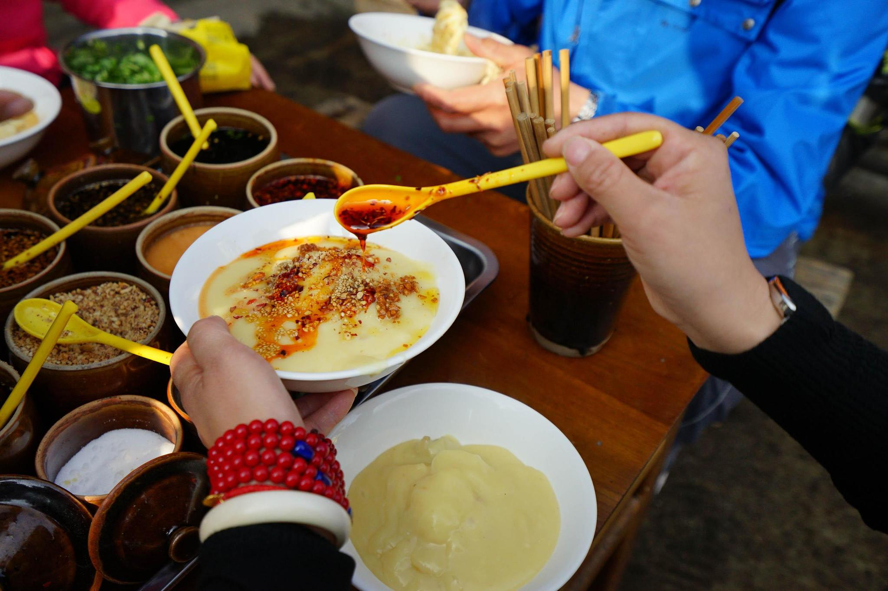

截至2024年，腾冲市共有A级景区48个。其中AAAAA级景区2个，AAAA级景区7个，AAA级景区29个，AA级景区10个。A级景区数量在云南省县（市、区）中排名第一。
滇缅抗战博物馆于2005年7月7日建成开馆，占地面积14677平方米，馆址设在原中国远征军20集团军司令部的旧址上，与原国殇墓园融为一体，全面真实展示滇缅印抗战史实，是集展览、收藏、研究、瞻仰、教育等多重功能为一体的抗战专题纪
全国重点文物保护单位。亦称学宫、黉学，位于腾冲城区，为一规模宏大的组群建筑。始建于明成化十六年，光绪五年进行了重修，是怒江以西唯一保存较为完好的学宫，且为腾冲城内在抗日战火中遗留下的唯一的古建筑群
国家AAAA级旅游景区，位于城区西南3千米，有“火山环抱中的桃源仙境”之美誉，位列“中国十大魅力名镇”之首，是著名的侨乡。建筑中西合璧，既有徽派建筑的婉约，又有西式建筑的明朗，兼有东南亚风情。景区内有中国最大的乡村图书馆—

腾冲饮食文化既受中原饮食文化的影响，又受江南饮食文化的影响，吸纳了近邻缅甸的饮食文化，又引进了部分西方饮食文化，形成了独具特色的腾冲饮食文化。腾冲的餐饮完全区别于滇味，具有油而不腻、酸辣有度、香而爽口的特点。腾冲风味的家常菜以酸辣为主，用得最多的佐料是酸笋、干腌菜、腊腌菜、水腌菜、糊辣子、糟辣子、小米辣、咸菜等调料，都是独具特色的腾冲特产。
稀豆粉因《舌尖上的中国·香》播出而走红。做法是将豌豆泡于水中，尔后带水磨成浆状，再在锅中用强火加温搅拌而成。稀豆粉的吃法因地域不同而有所区别，吃时可以拌饵丝、米线、卷粉，或把烧饵块、油条撕成块放进稀豆粉里。腾冲的稀豆粉选料上乘，讲究加工，必须是当天磨，当天搅，一气呵成。
腾冲市是遗落在边地的汉书，因为地处极边，而腾冲人大部分是戍边将领和兵士的后代，所以汉文化得以较好的保存和传承。腾冲神诞会火有玉皇会、观音会、佛祖会、老君会、朝南斗会、朝北斗会、东岳庙会、西岳庙会、城隍会、文昌帝君、关帝会、祭龙王、祭火神、祭山神、祭魁星等。民间节庆有腊八节、春节、清明节、端阳节、火把节、中元节、中秋节、重阳节等。